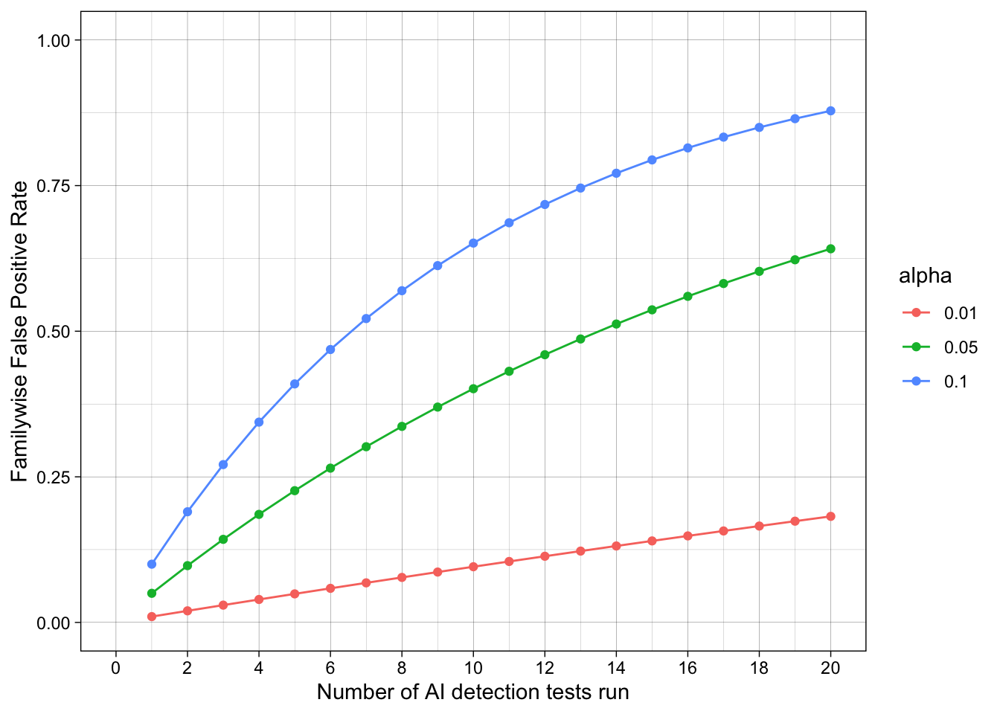

x <- -1
y <- -3
z <- sum(x, y)
z[1] -4Two of the key steps in a simulation study (generate data and analyze data) require us to know how to write functions. This chapter explains what functions are and how to write them.
A function is a piece of code that receives input(s), does something with it, and returns output(s).
To take two very simple example, the sum() function calculates the sum of the number inputs passed to it:
x <- -1
y <- -3
z <- sum(x, y)
z[1] -4When we run the code for a given function, we typically refer to this as ‘calling’ the function. The inputs we provide to functions are referred to as ‘arguments’. Functions are called using its name, with its arguments being placed inside round brackets: function_name(argument1, argument2, ... argumentN).
To take a second example, the abs() function takes a numeric input and calculates their absolute value (i.e., removes the minus sign):
abs(z)[1] 4While base-R contains nearly three thousand functions, they are by no means all the functions you might need while cleaning and analyzing your data. That’s why we use install.packages() and library() to install and load other functions, including those in the tidyverse packages (e.g., select() and mutate()).
When writing simulation studies, we often need to need to define our own custom functions.
Imagine that you often needed to first sum numbers and then find their absolute values. Maybe you get tired of having to write the following every time:
x <- -1
y <- -3
z <- abs(sum(x, y))There is a general rule in coding: try not to repeat yourself, because repeating long chunks of code and slightly changing the bits you need is a common source of making errors.
Instead, we could write a custom function for this specific purpose:
# define function
absolute_sum <- function(x, y){
result <- abs(sum(y, x))
return(result)
}
# call function
absolute_sum(-2, -5)[1] 7absolute_sum(1, 4)[1] 5absolute_sum(-10, 2)[1] 8Being able to do this becomes very important when a) you need to do something many thousands of times, often with small variations b) the thing you are doing becomes more complicated. You will encounter both when writing simulation studies.
Functions have three components.
It is useful to bear these in mind when writing, debugging and using functions. Most of the errors people make in writing code for functions, or their approach to writing that code, come from confusing the elements or forgetting one.
Functions usually have a name that is used to call the function and use it. This is done by declaring the function, just as you would a variable, using the assignment operator (<-) and function(), which is the function to define new functions.
function() call are the function’s arguments. In this case, x and y.{ }, code defines what the function does internally.return() function is used to define what the function should return as output.# inputs between ()
absolute_sum <- function(x, y){
# do stuff, between {}
result <- abs(sum(y, x))
# outputs in res()
return(result)
}* Anonymous functions (i.e., functions that we don’t name) do exist, but we don’t need to know about them right now. ** Coders have arguments about whether ‘explicit’ return()s should be used or not. It is possible not to use return() and still have a function give an output (e.g., by just running the name of the to-be-returned object without it being wrapped in return()). However, when learning about functions and their conceptual components, it is a very useful to be explicit about what the output is. We therefore recommend it in this context.
The worst way to write a function is the way you read the code for it. Instead, write it from the inside out, starting with the ‘do stuff’ and using hard coded values.
Let’s write the absolute_sum() function from scratch, in the way we recommend.
# get just the sum() working
temp <- sum(-1, -3)
temp[1] -4# get just the abs() working
temp2 <- abs(-4)
temp2[1] 4# get them both working together
result <- abs(sum(-1, -3))
result[1] 4Declare variables with hard-coded values, and substitute the hard-coded values in the code for these variables.
# declare variables
x <- -1
y <- -3
# substitute the variables in and check it still works
# result <- abs(sum(-1, -3))
result <- abs(sum(x, y))
result[1] 4These variables will become the function’s arguments.
Decide on a descriptive name for the function. Declare the function using its name, the <- assignment operator, and the function() function. Add curly brackets, { }, for where the ‘do stuff’ code will go.
# NB code will not run
absolute_sum <- function(){
}Copy the code into the ‘do stuff’ between the curly brackets.
# NB code will not run
absolute_sum <- function(){
result <- abs(sum(x, y))
}The function still has no inputs or outputs. Add any variables it uses into the inputs between the round brackets, ( ).
absolute_sum <- function(x, y){
result <- abs(sum(x, y))
}At this point, the function will run and won’t throw any errors, but it also doesn’t do what we want it to. For example:
absolute_sum(-4, -11)The function has no outputs defined.
It calculates the absolute value of the sum and assigns it to the variable results, but it does not return this value to the user. This is due to a concept called ‘variable scoping’, which is a bit more complex and we won’t cover here.
Suffice to say: you can fix this by telling the function to not only calculate this value, but also return it using return().
absolute_sum <- function(x, y){
result <- abs(sum(x, y))
return(result)
}Once fixed, you can now call the function and it works correctly.
absolute_sum(-4, -11)[1] 15Because of variable scoping. Variable scoping means that we are usually unable to see the value of variables defined inside a function from outside that function unless they are returned by the function.
This is probably not what you’re used to in R, which mostly uses ‘global’ variables. For example, you are used to being able to define my_text <- "hello" and then being able to see or use the my_text variable elsewhere in your R script. This is not actually the norm in coding; the scope of variables is often more limited, such as being able to access variables created within a function only inside that function.
Put simply: because you can’t see everything that’s happening inside functions, you can’t debug and fix them. Instead, write the code as you normally do, and convert working code into a function.
Once you have code that uses variables, you can actually have RStudio do the ‘wrap it’ step for you.
In your local copy of this .qmd, highlight the code in the chunk below, click ‘Code’>‘Extract Function’, name it ‘absolute_sum’, and click ‘ok’. You can see gifs of this here.
result <- abs(sum(x, y))
result[1] 4Beware: This method isn’t perfect, as it doesn’t add return() around result or ensure that you have written code to create outputs. But it can save you time.
Before you write the ‘do stuff’ code inside a function - or indeed any complex code - it’s often helpful to write ‘pseudocode’ first.
Pseudocode is a plain-language or code-like description of what your function should do, which breaks the problem down into smaller steps or operations. It is not valid R code, and it is not meant to run. Instead, it’s a thinking and planning tool: you use it to clarify the logic of your function before you worry about syntax or bugs.
Pseudocode has a number of advantages:
There isn’t one “correct” format of pseudocode. The main goal is always plain-language readability. A common style is: - Start with what the function receives (inputs) - List the steps inside the function (do stuff) - End with what it returns (output)
Here is pseudocode for our absolute_sum() function. Note that there is no particular standard for pseudocode, it is just something between text and code that runs.
absolute_sum function
steps:
1. Add two numbers to get their sum
2. Take the absolute value of that sum
3. Returns the absolute valueMaybe we would then improve this by thinking about basic structure of any function, i.e., separating the inputs, ‘do stuff’ and outputs, and therefore the input variables that are used in the ‘do stuff’.
absolute_sum function
inputs(x, y)
steps:
1. sum x, y
2. absolute of sum
output:
absolute sumWe might then look up the existing R functions to do each of these steps, making the pseudocode increasingly code-like.
absolute_sum
inputs:
x, y
do stuff:
sum <- sum(x, y)
abs_sum <- abs(sum)
outputs:
abs_sumAt this point, you can get individual parts of the ‘do stuff’ working as R code.
# example values
x <- -3
y <- -10
# draft of 'do stuff'
value_sum <- sum(x, y)
value_absolute_sum <- abs(value_sum)
value_absolute_sum[1] 13At this point, the ‘do stuff’ is working, and your pseudocode is now code. You have enough to go to the ‘wrap it in a function’ step.
The real value of pseudocode shows up when functions are more complex.
For example, here is pseudocode for a very common simulation function that we will explore in the next chapter: generate one dataset for a Randomized Controlled Trial with two conditions, treatment and control, where the data in each condition comes from a normally distributed population.
function: generate_data
necessary steps, but not necessarily implemented in this order:
1. For control group, draw n_per_group values from a normal distribution with mean mu_control and sd sigma
2. For treatment group, draw n_per_group values from a normal distribution with mean mu_treatment and sd sigma
3. Combine both into one a data frame
4. Create a column that labels the groups, eg "control" vs "treatment"
5. End up with a data frame with 'group' and 'score' column; output this.
inputs probably needed based on steps:
- n_per_group, mu_control, mu_treatment, sigmaNotice something important: this is basically just a checklist. When you convert it to R code, you can translate each step one at a time and test as you go. You may need to reorder or change the steps, but it gives you a plan. If you get lost in your code, you can go back to check the plan.
Functions often have many arguments, not all of which you want to specify every time. Often, there are reasonable defaults.
For example, imagine we needed a function to both a) calculate the mean of two numbers and b) round this mean. We might define a new function as:
# define function
rounded_mean <- function(x, y, n_digits){
mean_x_y <- mean(c(x, y))
result <- round(mean_x_y, digits = n_digits)
return(result)
}
# usage
rounded_mean(x = 2.1, y = 3.01, n_digits = 2)[1] 2.55rounded_mean(x = 2.1, y = 3.01, n_digits = 3)[1] 2.555In psychology, we often round things to two decimal places. If we want to set the n_digits = 2 by default, we can define this in the arguments when declaring the function:
rounded_mean <- function(x, y, n_digits = 2){
mean_x_y <- mean(c(x, y))
result <- round(mean_x_y, digits = n_digits)
return(result)
}Now, we don’t need to provide n_digits every time. Unless told otherwise, rounded_mean() will use n_digits = 2.
rounded_mean(x = 2.1, y = 3.01)[1] 2.55rounded_mean(x = 2.1, y = 3.01, n_digits = 3)[1] 2.555This can be useful when we have a very general function with reasonable defaults. For example, most of effectize::cohens_d()’s arguments have default values:
# from its documentation:
cohens_d(
x,
y = NULL,
data = NULL,
pooled_sd = TRUE,
mu = 0,
paired = FALSE,
reference = NULL,
adjust = FALSE,
ci = 0.95,
alternative = "two.sided",
verbose = TRUE,
...
)Functions written for R packages usually have many checks built into them. Users are likely to use - and misuse - functions in a variety of ways and often need informative feedback messages to help them fix code when it’s wrong.
For example, if you run the code sum("hello", 3), R will return the error message “Error in sum(”hello”, 3) : invalid ‘type’ (character) of argument” because you cannot add numbers and character variables. R might have it’s flaws but it’s not lawless, we leave that to javascript.
Functions written for simulation studies tend to be more ‘brittle’ or ‘fragile’: they work under a more limited range of conditions, don’t handle errors or exceptions as well, and tend to break without returning clear error messages. In part, this is because the people writing stimulation studies know the code is for a specific purpose and don’t need it to be very general. But, in part, it is also because the people writing simulations are less likely to have the same software engineering skillset as R package developers, who are more likely to write functions that follow the principles of “fail early, fail loudly”.
For example, there is nothing stopping us from running the following code using the function we just wrote:
rounded_mean(x = 2.1, y = 3.01, n_digits = -3)[1] 0Think about the function’s arguments and outputs: Does the output represent an error or not?
Well… it depends. On the one hand, you can’t round a number to less than zero decimal places. On the other hand, this makes certain types of inputs invalid or ignored without telling the user this. In other context, ‘silent failures’ like this might have serious impacts on the results of your simulation.
Whether or not this specific example represents an error, the situation can be avoided by using adding input checks and error messages to our functions. This makes them ‘harder’, ie less brittle. It will also help you build your R skills towards being able to write R packages yourself.
# in the local version of this .qmd file, you can run this code to see the error messages
library(checkmate)
rounded_mean <- function(x, y, n_digits = 2) {
# input checks
# - check that x and y are both single numeric values
assert_number(x, finite = TRUE)
assert_number(y, finite = TRUE)
# - check that n_digits is a non-negative integer
assert_count(n_digits)
# do stuff
mean_x_y <- mean(c(x, y))
result <- round(mean_x_y, digits = n_digits)
# output
return(result)
}
rounded_mean(x = 2.1, y = 3.01, n_digits = -3)If you highlight and run the above code in your local version of this .qmd, it will return the error “Error in rounded_mean(x = 2.1, y = 3.01, n_digits = -3) : Assertion on ‘n_digits’ failed: Must be >= 0.”
The {checkmate} library has many other functions for checking other types of inputs.
Note that there are many other ways of checking inputs, including R’s build in methods and other R packages. These include:
match.arg()# in the local version of this .qmd file, you can run this code to see the error messages
calculate_stat <- function(x, type = c("mean", "median")) {
# check input
# - if 'type' isn't "mean" or "median", R stops here and errors
# - if the user provides nothing, it uses the first one ("mean")
type <- match.arg(type)
if (type == "mean") {
return(mean(x))
}
if (type == "median") {
return(median(x))
}
}
my_data <- c(10, 20, 30, 40, 100)
# this works
calculate_stat(my_data, "mean")
# this works
calculate_stat(my_data, "median")
# this fails appropriately ("mode" is not an allowed input)
calculate_stat(my_data, "mode")stop()# in the local version of this .qmd file, you can run this code to see the error messages
double_allowed_inputs <- function(val) {
allowed <- c(1, 10, 100)
if (!val %in% allowed) {
stop("val must be 1, 10, or 100")
}
return(val * 2)
}
# this works
double_allowed_inputs(val = 10)
# this fails appropriately
double_allowed_inputs(val = 6)See also stopifnot().
Another R library that is often used for checking inputs is {assertthat}, which focuses on readable error messages.
# in the local version of this .qmd file, you can run this code to see the error messages
library(assertthat)
rounded_mean <- function(x, y, n_digits = 2) {
# check inputs
assert_that(is.number(x))
assert_that(is.number(y))
assert_that(is.count(n_digits))
# do stuff
mean_x_y <- mean(c(x, y))
result <- round(mean_x_y, digits = n_digits)
# output
return(result)
}
# this works
rounded_mean(10, 20)
# this fails with: "x is not a number (a length one numeric vector)."
rounded_mean(x = c(10, 20), y = 30)
# this fails with: "n_digits is not a count (a single positive integer)."
rounded_mean(10, 20, n_digits = -1)SPOILER: Throughout this book, to make the code as simple as possible, we almost universally ignore our own advice here and do not include input checks in the functions we write.
The function must be present in your environment to be usable. After you write your function, you must run the code that declares it before you can use it. If you can’t see your function in your environment tab under ‘Functions’, you need to run the code that contains the function() call and assigns it a name.
You must cautiously check that your function actually works as you expect, not just that the code runs. Give it lots of different input values that should and should not work, and check you get the correct outputs. We have often made the following mistake when writing functions, and you likely will too.
absolute_sum <- function(a, b){
result <- abs(sum(x, y))
return(result)
}
absolute_sum(1, 5)[1] 13The function’s inputs are defined as a and b, but it actually uses x and y. x and y were defined as global variables earlier in the script, so it will run using these two values every time, eg absolute_sum(1, 5) and absolute_sum(31, 39) will return the same result.
This often happens - as least to us - when we use common object names like dat and forget to rename them when converting code to a function.
To help you avoid this problem, you may sometimes need to clear your environment (with rm(list = ls())) to ensure that a function can be loaded and run without variables from the global environment.
Imagine a test has has a false positive rate of 5%, like the standard alpha value for a p-value.
If you apply this test many times to independent cases without applying familywise error corrections, what is the resulting false positive rate?
Let’s put this in meaningful terms: Many professors and universities now run essays and assignments through AI detection tools. But students submit many essays and assignments throughout their degree. What is the probability that, assuming you never violate the AI policy, one of your assignments is falsely flagged as using AI in a way that wasn’t allowed?
The familywise error rate (\(\alpha_{\text{total}}\)) for independent tests is the probability of observing at least one false positive (\(P(V \geq 1)\)), which can be reexpressed as the probability of not observing true positives (\(1 - P(V = 0)\)). This is the product of the individual probabilities of false positives (\(1 - \prod_{i=1}^{n} (1 - \alpha_i)\)), which simplifies to:
\[ \begin{align} \alpha_{\text{total}} &= P(V \geq 1) \\ &= 1 - P(V = 0) \\ &= 1 - \prod_{i=1}^{n} (1 - \alpha_i) \\ &= 1 - (1 - \alpha)^n \end{align} \]
Horrible, disgusting math which most of you want to avoid. But the code to do it is quite simple.
This code implements the math assuming each individual test’s false positive rate is 5% and that 10 total tests are run. It calculates the aggregate false positive rate, i.e., the probability that at least one test will show a false positive, assuming the null hypothesis is true.
1 - (1 - 0.05)^10[1] 0.4012631This calculation only considers false positives, not true positives. In the world it considered - ie assumes - all positives are false positives: no true violations of the AI policy ever occur.
What about other values of alpha and n? We could make them variables at the top of the chunk that are easier to change.
# variables
alpha <- 0.05
n <- 10
# code
1 - (1 - alpha)^n[1] 0.4012631Defining our own custom function involves putting the variables as arguments inside the function() call, and putting the code inside its { }.
We can then call the function using its name.
# define function
calc_aggregate_fpr <- function(n, alpha = 0.05) {
1 - (1 - alpha)^n
}
# usage
calc_aggregate_fpr(n = 10)[1] 0.4012631This also lets us call it an arbitrary number of times, eg for different values of n
calc_aggregate_fpr(n = 5)[1] 0.2262191calc_aggregate_fpr(n = 10)[1] 0.4012631calc_aggregate_fpr(n = 15)[1] 0.5367088calc_aggregate_fpr(n = 20)[1] 0.6415141calc_aggregate_fpr(n = 25)[1] 0.7226104At this point, we’ll skip over some code and skills we haven’t learned yet. In summary, we use the function we have just created to simulate many different values of n (the number of tests run) and alpha (the test’s alpha value, or nominal false positive rate for a single test) to observe their impact on the familywise error rate across tests. We’ll learn how to do this in future chapters. For the moment, let’s just observe the results.

Despite the test being advertised as having high accuracy, in the sense of a low false-positive rate, there is a strong risk of false positives when many tests are run. Students submit many different assignments over their studies. Assuming no AI policy violations occur, 20 assignments are tested, the tests are independent, and an alpha value of 5% is used, there is a strong risk (> 50%) that individual students will still have at least one of their assignments flagged as an AI policy violation across their studies.
This gets even worse when we consider that there are many students, each of which are submitting many assignments. If we track all 25 students in a symposium over 20 assignments they submit, the estimated familywise false positive rate is 100%. Whew.
Ready to practice? Download and complete the exercises for this chapter.